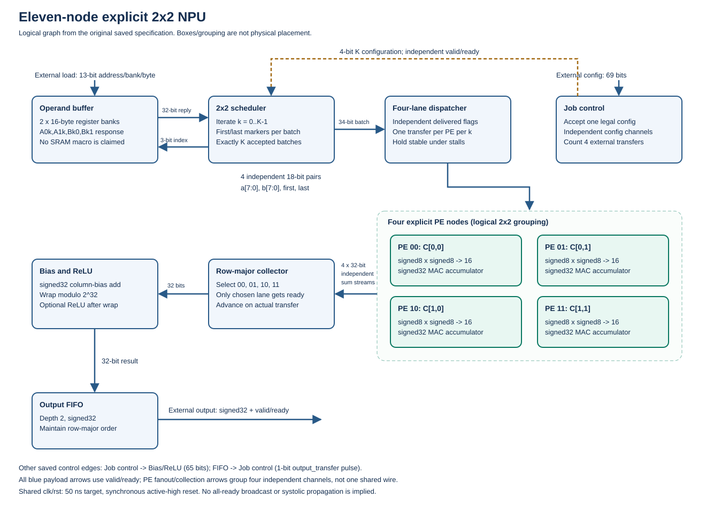
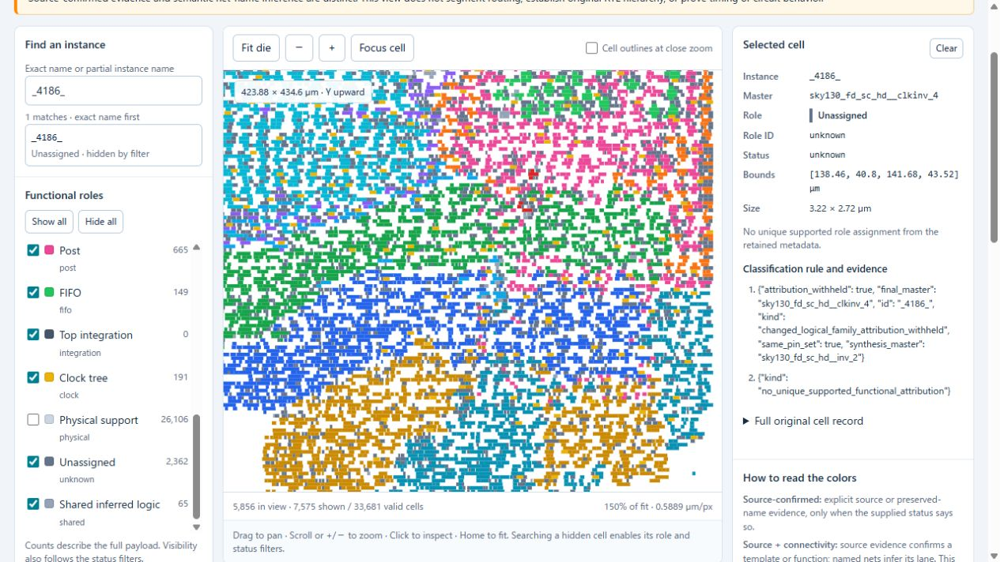
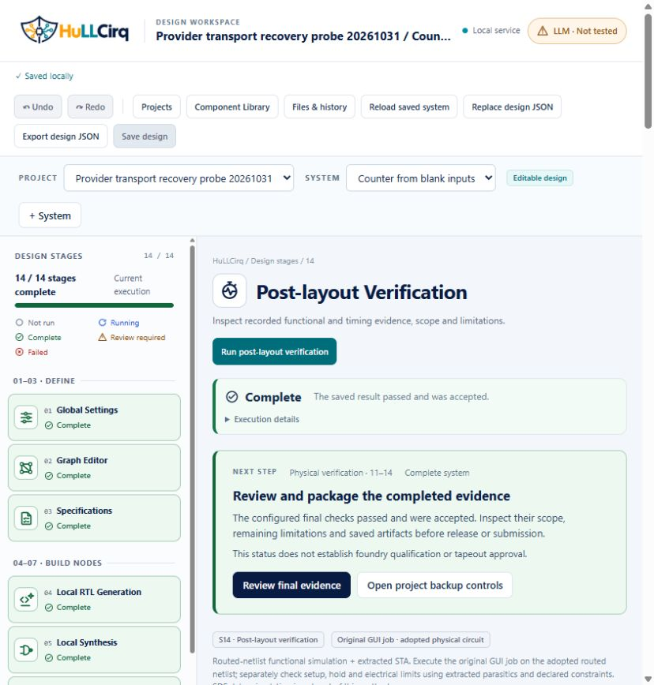
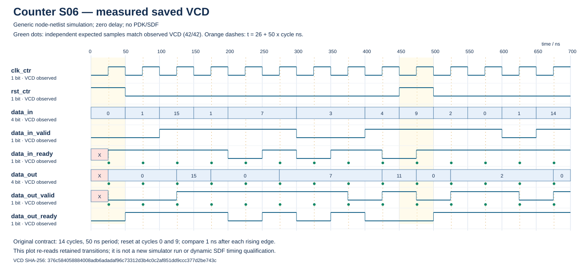
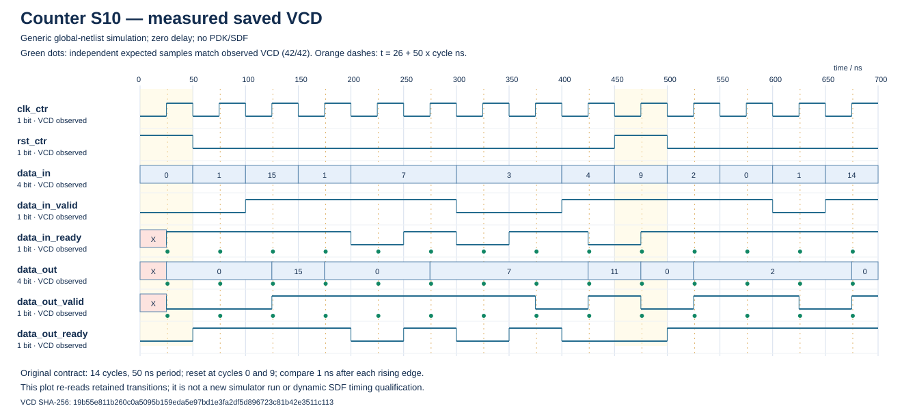
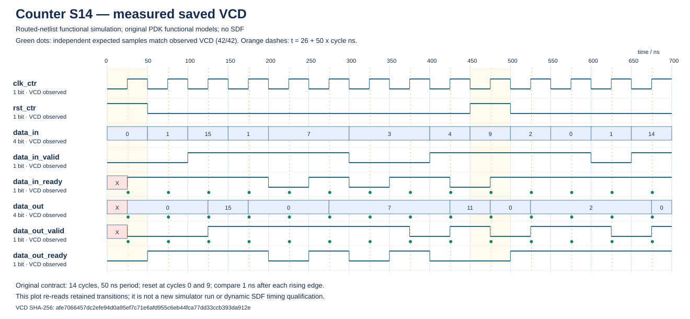

HuLLCirq: Human–Local-LLM Collaborative Circuit Design
ISSCC 2027 Code-a-Chip — final review edition.
Author and attending representative: Ryotaro Kawashima
Affiliation: Department of Biomedical Engineering, Graduate School of Biomedical Engineering, Tohoku University
HuLLCirq combines an English GUI, local-LLM RTL proposals, independent verification and source-bound execution history. This notebook walks through the original eleven-block NPU, independently calculates its expected outputs, and checks measured waveforms from three circuit stages. A separate reproducible example compiles and simulates the exact saved Counter RTL and synthesized netlist without asking a model to regenerate them.
Readable HTML copy · Project README · Final-review checklist · Saved-RTL replay · Apache-2.0
Running this notebook's cells performs saved-evidence and independent-reference checks. Actual new compilation/simulation uses the explicitly documented replay command; it is not started by opening the notebook.
Executed Python cell 1
from pathlib import Path
import hashlib
import json
import struct
root = next((p for p in (Path.cwd(), *Path.cwd().parents)
if (p / "HuLLCirq.ipynb").is_file()
and (p / "LICENSE").is_file()), None)
if root is None:
raise RuntimeError("Run this notebook inside the HuLLCirq project folder.")
print("Project:", root.name)
print("Mode: read-only saved-evidence inspection; no model or EDA execution")
Project: HuLLCirq Mode: read-only saved-evidence inspection; no model or EDA execution
1. Design problem and method
Text-only model interaction leaves circuit structure, interface contracts, changing source versions and downstream failures difficult to track. HuLLCirq makes those boundaries explicit. A person defines blocks, external terminals, behavior, timing and data transfers. A local model proposes RTL; ordinary software manages frozen inputs and history; independent references and EDA determine the result.
| Participant | Responsibility |
|---|---|
| Human | Define intent and acceptance criteria, authorize adoption policy and inspect results |
| Development assistant | Implement the application, operate GUI validation and provide explicitly attributed implementation/repair guidance |
| Local LLM | Propose node RTL and integration RTL through the recorded local API |
| Ordinary software | Validate contracts, freeze the original job, enforce source freshness and preserve successful and failed histories |
| EDA | Compile, simulate, synthesize, map, place/route, extract parasitics, run DRC/LVS and evaluate routed function and static timing |
This is a collaborative design method. Some model instructions contain development-assistant code guidance; those attempts are not autonomous model successes. Automatic adoption records prior user authorization. Development-assistant review is not relabelled as human review.
2. One source chain through fourteen GUI stages
| Stages | Work and retained evidence |
|---|---|
| S01–S03 | Graph and external-terminal validation, specification and frozen verification contract |
| S04–S07 | Node RTL generation/repair, generic synthesis, node-netlist verification and evidence-backed implementation specifications |
| S08–S10 | Integration RTL generation, global synthesis and global-netlist verification using the original job |
| S11–S14 | Mixed-cell physical implementation, DRC, LVS, routed-netlist functional simulation and extracted STA |
S06/S10/S14 provide timing-diagram inspection of recorded VCD observations. The file view exposes generated artifacts and permits direct selection. Stage navigation and evidence inspection do not save circuit drafts or rerun tools. Explicit Save, Run and Review actions preserve input and result lineage. Physical failures expose a diagnosis and an appropriate return path; a new result must establish its own source-bound checks and adoption.
Shared PE definitions can expand to multiple instances. Mixed standard-cell placement remains the selected mode; experimental block-region runs are retained without making them the active placement. Functional Maps annotate existing placed-cell footprints and expose source-confirmed, inferred, shared and unknown evidence separately.
3. Worked circuit: eleven-block explicit 2x2 NPU
The main design computes a 2x3 by 3x2 signed matrix product, adds one bias per output column and optionally applies ReLU. This original job uses K=3 and disables ReLU. Four distinct PE instances compute the four dot products. The GUI saves eleven node definitions and the explicit connections shown below.

This is a logical connection diagram, not a physical floorplan or hardened-macro arrangement. Configuration and output-transfer feedback are distinguished from the operand/result path. The machine-readable graph and all port widths are retained in the worked-example data.
| Block | Saved responsibility | Public payload widths (bits) |
|---|---|---|
| Job control | Latch one job; distribute independent scheduler/post configuration; complete only after four external transfers. | config_data:69, schedule_config:4, post_config:65, output_transfer:1, busy:1, job_done:1 |
| Operand buffer | Two banks of 16 byte registers; produce A0k, A1k, Bk0, Bk1 in one 32-bit response. | load_data:13, read_index:3, operands:32 |
| 2x2 scheduler | For each k request one bundle, then send one 34-bit bundle with first/last markers. | schedule_config:4, read_index:3, operands:32, batch_data:34 |
| Four-lane dispatcher | Deliver four independent 18-bit pairs exactly once per operand batch. | batch_data:34, pair00:18, pair01:18, pair10:18, pair11:18 |
| PE 0,0 | Output-stationary signed8 x signed8 MAC with signed32 wrap; one final sum per K transfers. | pair_data:18, sum_data:32 |
| PE 0,1 | Output-stationary signed8 x signed8 MAC with signed32 wrap; one final sum per K transfers. | pair_data:18, sum_data:32 |
| PE 1,0 | Output-stationary signed8 x signed8 MAC with signed32 wrap; one final sum per K transfers. | pair_data:18, sum_data:32 |
| PE 1,1 | Output-stationary signed8 x signed8 MAC with signed32 wrap; one final sum per K transfers. | pair_data:18, sum_data:32 |
| Row-major collector | Serialize the four final sums in row-major 00,01,10,11 order. | sum00:32, sum01:32, sum10:32, sum11:32, acc_data:32 |
| Bias and ReLU | Add the signed32 column bias with wrap, then optionally apply ReLU. | post_config:65, acc_data:32, result_data:32 |
| Output FIFO | Depth-two signed32 output queue; report actual external valid-and-ready transfers. | result_data:32, output_data:32, output_transfer:1 |
Original inputs and arithmetic
A = [[-8, 3, 5], B = [[ 6, -1], column bias = [3, -2]
[ 7, -2, 4]] [-3, 5], ReLU = false
[ 2, 7]]
For row i and column j, the result is wrap32(sum(A[i][k]*B[k][j]) + bias[j]), followed by ReLU only when enabled. Inputs are signed 8-bit values, products are signed 16-bit, and the MAC/post-processing arithmetic preserves signed 32-bit wrap semantics. No saturation or unsigned reinterpretation is substituted for this original job.
| Output (row-major) | Three signed products | MAC | Column bias | Expected output | Recorded receive cycle |
|---|---|---|---|---|---|
| C00 | -48, -9, 10 | -47 | 3 | -44 | 44 |
| C01 | 8, 15, 35 | 58 | -2 | 56 | 45 |
| C10 | 42, 6, 8 | 56 | 3 | 59 | 47 |
| C11 | -7, -10, 28 | 11 | -2 | 9 | 49 |
The receive cycles use the original testbench's numbering and observed handshakes; they are not an inferred throughput or maximum-frequency claim. The next cell independently evaluates the saved input matrices, then compares that calculation with the unchanged expected values and recorded functional observations. It does not evaluate the DUT to create its own golden reference.
Executed Python cell 2
worked = json.loads((root / "submission/presentation/npu_worked_example.json").read_text(encoding="utf-8"))
job = worked["job"]
A, B, bias = job["A"], job["B"], job["bias"]
wrap32 = lambda x: (x + (1 << 31)) % (1 << 32) - (1 << 31)
calculated = []
for i in range(2):
for j in range(2):
products = [A[i][k] * B[k][j] for k in range(job["k"])]
mac = wrap32(sum(products))
value = wrap32(mac + bias[j])
value = max(0, value) if job["relu"] else value
calculated.append(value)
print(f"C{i}{j}: products={products}, MAC={mac}, bias={bias[j]}, result={value}")
assert calculated == worked["arithmetic"]["expected_outputs"]
assert calculated == [sample["value"] for sample in worked["functional_observations"]]
print("Independent original-job reference:", calculated, "Passed")C00: products=[-48, -9, 10], MAC=-47, bias=3, result=-44 C01: products=[8, 15, 35], MAC=58, bias=-2, result=56 C10: products=[42, 6, 8], MAC=56, bias=3, result=59 C11: products=[-7, -10, 28], MAC=11, bias=-2, result=9 Independent original-job reference: [-44, 56, 59, 9] Passed
Design decisions and their boundaries
| Choice | Role in the demonstration | Boundary |
|---|---|---|
| Explicit four-PE graph | Makes each PE's ports, routing contract and source lineage inspectable | This example is not a demonstrated systolic fabric; the separate P3 example tests shared definitions |
| Separate dispatch/collection stages | Converts saved scheduling and handshakes to four lanes and returns row-major results | Finite saved backpressure cases do not prove every possible schedule |
| Independent saved vectors | Keep expectations fixed while changing RTL, netlist or physical source | Passing the finite job is not exhaustive equivalence |
| Mixed standard-cell placement | Preserves the selected placement mode after the block-region experiment produced unwanted whitespace | The functional-role overlay is not a physical partitioning constraint |
| 50 ns target (20 MHz) | Original saved clock target retained throughout corrections | This was not selected through a documented optimization study, and is not a measured maximum frequency |
| Pinned SKY130 HD flow | Gives a concrete open-PDK physical implementation | This does not qualify arbitrary PDKs or foundry signoff |
Physical result of this exact design
The final accepted S11/S12/S13/S14 chain is 4e818ce3905c4bd1ad0e9b50033271cb / d794d07e3d1348dda7062b5b6d59a44b / 924d261f490a4188b976ef35e0a0e663 / 6d844bfc545146738b088129ddf68564, with each stage prefix recorded in the evidence index. The physical view has 33,681 placed-cell footprints. All seven required S14 checks passed across nine STA corners; worst setup/hold slack was 23.3823065306 / 0.0951505568 ns. DRC passed, and LVS had Unique match with required difference counts zero, while three non-overlap extraction feedback items remain disclosed.

This actual screenshot shows a role overlay on the saved placement, not a placement algorithm or proof of exclusive cell ownership. Older layouts, the two failed physical corrections and their original input/output history remain preserved. Finite routed-netlist functional simulation and extracted STA are distinct from dynamic SDF simulation.
4. Non-NPU GUI validation
| Case | Preserved input and finite result |
|---|---|
| P1 Counter | Synchronous active-high reset, 14 cycles, 42 expected output comparisons and 50 ns. A new GUI-only S01–S14 flow completed on 2026-10-31. S06/S10/S14 each compared 42 outputs with zero mismatches and zero missing observations. Magic/KLayout DRC had zero violations; source-specific LVS correction produced zero feedback and Unique match. |
| P2 FIFO → XOR | A separate saved multiple-block, non-NPU contract completed the positive S01–S14 GUI flow. Earlier rejected model candidates and explicit repair guidance remain retained. |
| P3 shared 2×2 signed saturating lanes | One definition, four members, 24 cycles and 288 expected outputs; positive S01–S14 GUI flow completed. A later map retained the same 725 footprints and exposed 33 checked-inference cells per member. |
These circuits do not replace the NPU's original inputs or inherit its adopted results. P1's warning-free LVS correction does not remove historical extraction feedback from other designs. Results apply to their exact saved sources and finite verification jobs.

5. Inspect measured timing diagrams at S06, S10 and S14
The following Counter diagrams are regenerated from the original saved VCD files, not fabricated from the expected values. The unmodified independent vectors supply comparison samples after each rising edge. Source hashes, testbench port bindings, comparison times and all 42 samples per stage are in the waveform summary.



S06/S10 are zero-delay generic-netlist observations. S14 uses routed-netlist functional models without SDF delay annotation; separate extracted STA checks timing. Similar functional traces across these stages do not measure propagation delay or prove timing equivalence.
The next cell reparses the original VCDs and specifications and verifies the published derived JSON/SVG files. This is a saved-observation check, with no new simulation.
Executed Python cell 3
import subprocess import sys checked = subprocess.run([sys.executable, "-B", "-X", "utf8", "scripts/render_submission_figures.py", "--check"], cwd=root, capture_output=True, text=True, check=True) print(checked.stdout.strip())
{
"mode": "read_only_check",
"derived_files": 6,
"arithmetic_outputs": [
-44,
56,
59,
9
],
"waveform_checks": [
{
"stage": "S06",
"comparisons": 42,
"mismatches": 0,
"missing": 0
},
{
"stage": "S10",
"comparisons": 42,
"mismatches": 0,
"missing": 0
},
{
"stage": "S14",
"comparisons": 42,
"mismatches": 0,
"missing": 0
}
],
"model_or_eda_started": false
}
Executed Python cell 4
waveforms = json.loads((root / "submission/presentation/waveform_summary.json").read_text(encoding="utf-8"))
print("Stage | compared | mismatches | missing | method")
for stage in waveforms["stages"]:
assert stage["comparisons"] == 42 and not stage["mismatches"] and stage["missing"] == 0
print(stage["stage"], stage["comparisons"], len(stage["mismatches"]), stage["missing"], stage["observed_kind"], sep=" | ")
assert all(sample["match"] for sample in stage["samples"])
print("All 126 stage-output samples agree with the independent saved expectations.")Stage | compared | mismatches | missing | method S06 | 42 | 0 | 0 | Generic node-netlist simulation; zero delay; no PDK/SDF S10 | 42 | 0 | 0 | Generic global-netlist simulation; zero delay; no PDK/SDF S14 | 42 | 0 | 0 | Routed-netlist functional simulation; original PDK functional models; no SDF All 126 stage-output samples agree with the independent saved expectations.
6. Reproduce a result from exact saved RTL, without LLM generation
The saved-RTL replay guide gives exact files and commands for the submitted Counter. Its release_counter.v and release_counter_top.v are the adopted saved RTL; global_netlist.v is the saved S10 generic netlist. Both reuse the original contract_tb.v, verification plan, 14 cycles, 42 independent expected outputs and 50 ns clock. Their source hashes and adopted lineage are pinned in the replay provenance.
The script verifies those inputs before invoking a separately installed trusted Icarus Verilog 12 runtime. It checks an RTL build and a generic-netlist build, with no new model request, synthesis or physical run. The replay is isolated from original stores and does not adopt a result or modify historical acceptance. A source/hash mismatch fails rather than silently updating the expected contract.
This exact replay was executed during this submission revision. Its new results below are separate from the earlier GUI/native runs. The notebook reads the retained replay result; to run the simulator yourself, use the explicit command in the guide. Opening the notebook never starts compilation.
Executed Python cell 5
replay = json.loads((root / "submission/reproduction/p1_counter/verification-result.json").read_text(encoding="utf-8"))
assert replay["validation_status"] == "Passed"
assert replay["model_requests"] == 0 and replay["new_synthesis_or_physical_runs"] == 0
assert replay["historical_adoption_modified"] is False
print("New finite replay of the exact saved sources:")
for result in replay["results"]:
assert result["validation_status"] == "Passed"
assert result["checked_output_samples"] == result["required_output_samples"] == 42
assert result["mismatches"] == result["missing"] == 0
print(result["mode"], "cycles:", result["vector_count"], "output comparisons:", result["checked_output_samples"], "mismatches:", result["mismatches"], "missing:", result["missing"])
print("No LLM regeneration, synthesis, physical run or historical adoption change.")New finite replay of the exact saved sources: rtl cycles: 14 output comparisons: 42 mismatches: 0 missing: 0 generic_netlist cycles: 14 output comparisons: 42 mismatches: 0 missing: 0 No LLM regeneration, synthesis, physical run or historical adoption change.
7. Historical GUI verification results, failures and intervention accounting
The final local closure records 113 GUI scenarios: 65 earlier scenarios plus 48 continuation scenarios, not 113 full circuit flows. The continuation includes one new P1 S01–S14 flow, six local-model requests and 37 executed outer native commands, all exit zero. The local provider reported 9,244 tokens; this is not Codex consumption. Eight production intervention packages, I13–I20, retain timestamps, changes, results, problems and causes in the evidence ledgers.
The P1 model initially emitted an asynchronous reset contrary to the saved synchronous-reset contract. The bad candidate was retained and rejected. A GUI repair instruction changed the sensitivity list while retaining the contract and independent expectations. Initial LVS extraction warnings were retained unadopted, then resolved using a new source-bound correction rather than by editing old records or waiving checks.
At source snapshot I19/Q6, the software suite recorded 3,077 executed tests, zero failures/errors and 36 skip records. I20 subsequently changed browser-state projection; a separate 56-test selection and actual fresh GUI reloads confirmed 14/14. No new full software suite was run after I20. Software fixtures, GUI scenarios, actual native commands and model requests are counted separately.
The evidence index identifies the selected source material and public derivatives. Original failures and intermediate checkpoints are history; the final declared checkpoint controls the result. Redacted public derivatives are not represented as byte-identical originals.
Retained-evidence file checks
These final cells read the saved result assets, hashes and image headers. They provide file-integrity and readability evidence in addition to the arithmetic, VCD and replay checks above. Historical screenshot names ending in .png contain JPEG bytes; the actual format is reported without changing their original bytes. Use python scripts/verify_submission.py for the full submitted-file manifest.
Executed Python cell 6
files = (
"LICENSE",
"results/gui_s14_20261021/README.md",
"results/gui_s14_20261021/loop-07-map-filter-zoom-pan.png",
"results/gui_release_closure_20261031/README.md",
"results/gui_release_closure_20261031/p1-final-14of14.png",
)
def image_details(data):
if data[:8] == bytes((137, 80, 78, 71, 13, 10, 26, 10)):
return "PNG", struct.unpack(">II", data[16:24])
if data[:2] == bytes((255, 216)):
position = 2
while position < len(data):
if data[position] != 255:
position += 1
continue
while position < len(data) and data[position] == 255:
position += 1
marker = data[position]
position += 1
if marker in (216, 217):
continue
length = struct.unpack(">H", data[position:position + 2])[0]
if marker in (192, 193, 194, 195, 197, 198, 199,
201, 202, 203, 205, 206, 207):
height, width = struct.unpack(">HH", data[position + 3:position + 7])
return "JPEG", (width, height)
if length < 2:
raise ValueError("Invalid JPEG segment length.")
position += length
raise ValueError("Unsupported or invalid image header.")
for relative in files:
data = (root / relative).read_bytes()
print(relative)
print(" bytes:", len(data), "sha256:", hashlib.sha256(data).hexdigest())
if relative.endswith(".png"):
image_format, (width, height) = image_details(data)
print(" Actual format and dimensions:", image_format, width, "x", height)
print("All listed files were read successfully.")
LICENSE bytes: 11758 sha256: 57fc2a2a84bb04fb71e24fdd6c133412ba67b65816d33c1c11fc9de5ef87aebd results/gui_s14_20261021/README.md bytes: 42680 sha256: babb74f75336c6660205a50a108dd05a0a68e609c19d6ec86de53ca214baf97b results/gui_s14_20261021/loop-07-map-filter-zoom-pan.png bytes: 212402 sha256: 559fb99918ef314a898e579f5fbf6dc52882f9cb65b018310b26159d43285845 Actual format and dimensions: JPEG 1265 x 712 results/gui_release_closure_20261031/README.md bytes: 35881 sha256: 776da836be0891935a43c74b41f756c05a4d55abe56c21e4a65b8858ddf12026 results/gui_release_closure_20261031/p1-final-14of14.png bytes: 88885 sha256: 8b8bfefe155c7e13059f34296cd4a8fee4101df615760b9571a1f9d8059495c4 Actual format and dimensions: JPEG 828 x 868 All listed files were read successfully.
Executed Python cell 7
index_path = root / "submission" / "evidence_index.json"
if index_path.is_file():
data = index_path.read_bytes()
index = json.loads(data.decode("utf-8-sig"))
print("Public evidence index bytes:", len(data))
print("SHA-256:", hashlib.sha256(data).hexdigest())
if isinstance(index, dict):
print("Top-level sections:", ", ".join(sorted(index)))
elif isinstance(index, list):
print("Top-level entries:", len(index))
else:
raise ValueError("The evidence index must be an object or array.")
else:
print("Public evidence index has not been staged in this working copy.")
print("See the submission guide; the retained-file checks above remain separate.")
Public evidence index bytes: 154490 SHA-256: 36788f7818c46d0cbde791f4ef28da69cdc5f4d3bccd885a1fd72a420700b12d Top-level sections: bytes, cases, created_at, derivative_notice, file_count, image_review, input_only_backup_qualification, method, missing_artifacts, privacy_policy, publication_privacy_refinement, schema_version, screenshots
Reproduction routes and scope
- Inspect and calculate: run this notebook from top to bottom; verify the original matrices, source pins and VCD comparisons. No model or simulator is started.
- Replay exact saved sources: follow saved-RTL replay, using the supplied adopted Counter RTL and original testbench. This establishes a new finite circuit-verification result.
- Generate a new design: follow fresh environment and GUI instructions, restore an input-only example, Duplicate and explicitly request model generation. This is stochastic new work, and does not reproduce the saved candidate by itself.
The Python service is part of the browser application's local runtime. Large tool/PDK/model installations are separately acquired from the pinned public distributions; no private cache is required by the fresh-install route. Independent clean-PC qualification remains unverified.
Original input/specification/expected values and successful/failed histories remain preserved. The public histories are explicitly labelled redacted inspection derivatives. They are not byte-identical original private evidence backups and do not transfer acceptance to an imported editable project.
Recommended and recorded tool versions
| Scope | Version |
|---|---|
| Application and read-only notebook | Python 3.12.10 / Python 3.12 standard library |
| Fresh local inference route | Ollama 0.32.15; Qwen2.5-Coder 7B Q4_K_M; individual historical profiles remain recorded separately |
| Generic verification/synthesis | Icarus Verilog 12.0; Yosys 0.33 |
| Physical environment | LibreLane 3.0.16; physical Yosys 0.62; OpenROAD commit dcf36133a369abc8f3c5e5738cd4d82e4903c0e0 |
| DRC/LVS tools | Magic 8.3.623; KLayout 0.30.7; Netgen 1.5.316 |
| PDK | SKY130A / sky130_fd_sc_hd; pinned Ciel revision 8afc8346a57fe1ab7934ba5a6056ea8b43078e71 |
Generic Yosys and physical Yosys are different installations. Per-stage tool-version files remain authoritative for the original run. First-use setup provides acquisition, prerequisite and license steps; third-party notices preserve the distribution boundary. This revision's replay used the existing trusted generic Icarus 12 installation, rather than claiming a newly tested independent PC.
8. Qualified scope and remaining conditions
The S14 method is routed-netlist functional simulation plus extracted static timing analysis (post_route_functional_plus_sta). It is not dynamic SDF simulation. Finite waveform comparisons are not formal equivalence or exhaustive behavior proof. DRC/LVS/STA passes are not foundry or tapeout approval.
The demonstrations cover supported synchronous digital RTL with explicit ports, connections and independent cycle contracts. Analog circuits, CDC qualification, arbitrary PDKs and formal equivalence are outside the implemented result. Independent clean-PC installation, actual human usability review, maximum-scale native circuits and a genuine eligible repeated electrical-only generic-v2 correction case remain unqualified. Input limits tested with GUI or software fixtures are distinguished from maximum-scale native execution.
No controlled study established learning benefit, time saving, model superiority or comparative advantage. HuLLCirq is a provisional name; trademark clearance is not established. Author, affiliation and attending-representative declarations were confirmed by the submitter.
9. Tools, references and licensing
The recorded execution uses open-source EDA tools including Icarus Verilog, Yosys, OpenROAD, Magic, KLayout and Netgen, with LibreLane and the SKY130 PDK. Local inference uses recorded Ollama profiles and Qwen model versions. Exact versions, artifact hashes and retrieval instructions belong to each retained run and the reproduction guide; different designs must not silently share a different historical tool claim.
HuLLCirq's original source and documentation are Apache-2.0. Third-party licenses and attribution remain applicable. Runtime binaries, PDK libraries and model weights are not redistributed here. Running a model locally does not itself establish its redistribution license.
Related work includes Chip-Chat, an example of conversational hardware design. This submission does not claim to reproduce that paper's experiment. Code-a-Chip official program information describes the notebook-driven open-source design submission context.